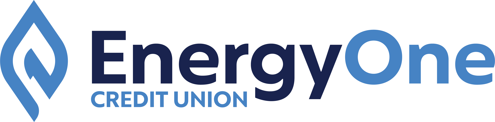
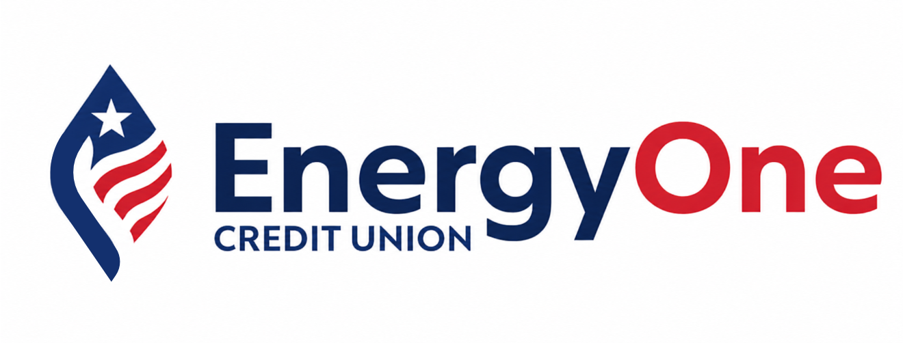
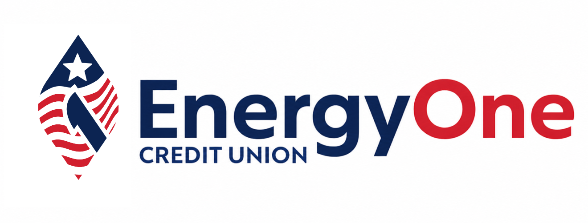
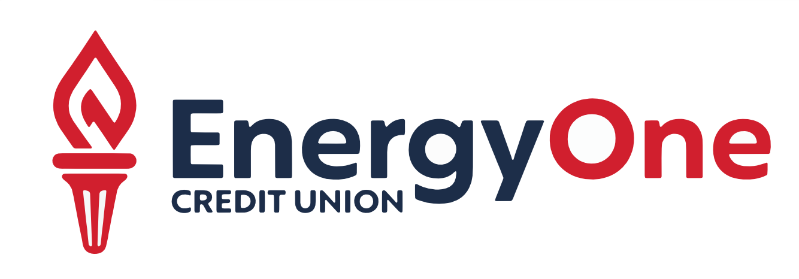

May 2026
Energy One Credit Union
Seasonal Logo — Initial Directions
US 250th Anniversary · July 2026
The Brief
What we're solving
The Ask
A seasonal logo variant for July 2026 tied to the US 250th anniversary.
The Constraint
Energy One's brand is civic, restrained, and community-rooted. The challenge: introduce a patriotic layer without disrupting the system's calm — or stripping any of the identifiable brand equity the mark has earned.
The Scope
Two initial directions. One introduces red as a seasonal accent. One stays within the existing palette. Neither replaces the wordmark.
Design Principles
Four criteria. Both directions answer to all four.
- 01Heritage, not spectacle — Civic pride, not flag-waving. A financial institution honoring a national milestone.
- 02Recognizability — The wordmark and flame are still recognizable. A seasonal swap, not a rebrand.
- 03Palette discipline — Navy and blue anchor everything. Red earns its place in Direction A only.
- 04Reversibility — Standard dimensions, zero layout changes required. The seasonal mark drops in where the current mark lives.
The Original Mark


Direction A
Flag & Flame
The existing flame, reborn in red, white, and blue.
What changes
Existing flame entwined with a US flag motif — three stripes behind the form and a single star that echoes the "One" in the brand name. "One" shifts from #0071F0 → #B22234 (seasonal only).
What stays
Wordmark typeface, proportions, layout. "Energy" in navy, "CREDIT UNION" in caps — unchanged. All lockup dimensions preserved.
Direction B
Liberty's Torch
Existing flame emanating from Lady Liberty's torch.
What changes
The flame icon is reimagined as Liberty's Torch — a vertical form that reads simultaneously as the existing brand flame and an upraised torch of liberty. Palette stays within navy and blue.
What stays
Wordmark typeface, proportions, layout, color system. The patriotic read comes through form, not added color.
Round 2 Variants


Round 2 — All Options
A · Flag & Flame
B · Flag & Flame w/ “1”
C · Liberty Torch
D · Liberty Torch Red
Next Steps
Where do we go from here?
One Direction Wins
Refine logo, generate variants and lockups, final deliverables and final presentation.
It's split
Identify the strongest element from each. Round 2 explores a hybrid or narrows to one.
Neither lands
Identify which principle is failing. Use that as the brief for round 2.